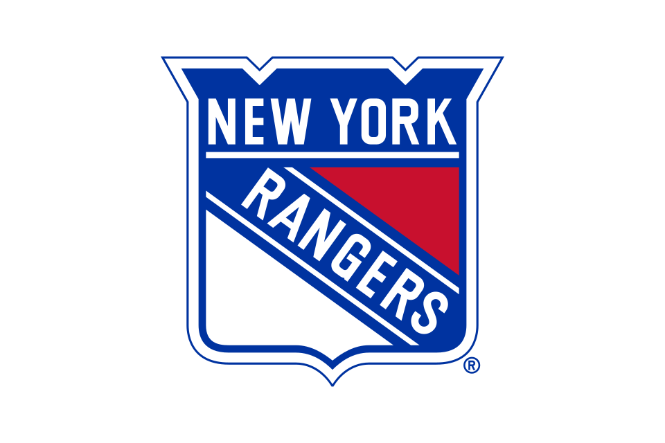

Banged-up Rangers struggle against even-worse-off Blackhawks for third straight loss
Call it the Injury Bowl if you will, but the Rangers will just call it another night of having “trouble putting the puck in the back of the net.”


Central · Western Conference · 40 headlines in the last 30 days

 Rangers vs. Blackhawks
Rangers vs. Blackhawks
 Blackhawks vs. Kraken
Blackhawks vs. Kraken
 Blackhawks vs. Canucks
Blackhawks vs. Canucks
 Blackhawks vs. Flames
Blackhawks vs. Flames
 Blue Jackets vs. Blackhawks
Blue Jackets vs. Blackhawks
 Maple Leafs vs. Blackhawks
Maple Leafs vs. BlackhawksCall it the Injury Bowl if you will, but the Rangers will just call it another night of having “trouble putting the puck in the back of the net.”

Moore has two assists, Knight makes 30 saves for Chicago; New York drops third in row

The New York Rangers were at the United Center on Friday for a post-Thanksgiving match against the Chicago Blackhawks.

CHICAGO (AP) — Andrew Mangiapane scored two power-play goals in the first period, Spencer Knight made 30 saves and the Chicago Blackhawks held off the New York Rangers 2-1 on Friday night for their fourth straight victory.Mika Zibanejad connected on the power play for the Rangers, who lost their third straight despite…

CHICAGO (AP) — The injury-depleted Chicago Blackhawks placed veteran forward Patrick Kane on injured reserve with a lower-body injury before Friday's game against the Rangers and recalled forward Landon Slaggert from Rockford of the AHL.Kane's moved to the IR, retroactive to Wednesday, means the NHL's all-time leading…
The Chicago Blackhawks and Rockford IceHogs announced multiple injury-related transactions on Friday.
Three Blackhawks have been named as trade candidates.


In this mailbox, we answer fan-submitted questions about the Chicago Blackhawks.

The Chicago Blackhawks beat the Seattle Kraken 3-1 to complete a road trip sweep.

The Chicago Blackhawks will face the Seattle Kraken on Wednesday night for some Thanksgiving Eve action.
The Chicago Blackhawks have a budding star in Roman Kantserov. His goal-scoring prowess from the KHL clearly translates to the NHL.

It's time to be grateful in this week's edition of the NHL Power Rankings

The Blackhawks are going nowhere fast, and it might somehow get worse without their prized star out at least four months

Roman Kantserov recorded his first NHL hat trick and added an assist as the Blackhawks used a four-goal first period to top the Canucks 6-3 on Sunday.
Blackhawks defenseman Wyatt Kaiser has been suspended without pay for three games by the NHL for an illegal check to the head of Calgary's Martin Pospisil.

Blues captain, Stars goalie Oettinger, Blackhawks defenseman Rinzel earn honors
3 Standouts From Game #26: Blackhawks 6, Canucks 3.


VANCOUVER, British Columbia (AP) — Rookie Roman Kantserov got his first NHL hat trick and added an assist as the Chicago Blackhawks used a four-goal first period to beat the Vancouver Canucks 6-3 on Sunday night.Frank Nazar extended his scoring streak to six games with a goal and an assist for the Blackhawks, who won…

The Canucks allowed three power-play goals and were unable to score any of their own in a 6-3 loss to the Chicago Blackhawks.

The Chicago Blackhawks took care of business against the Vancouver Canucks on Sunday night.
The Vancouver Canucks take on the Chicago Blackhawks on Sunday night.

NEW YORK (AP) — Chicago Blackhawks defenseman Wyatt Kaiser has been suspended without pay for three games for an illegal check to the head of Calgary forward Martin Pospisil, the NHL said Sunday.Under the terms of the Collective Bargaining Agreement and, based on his average annual salary, Kaiser will forfeit $26,289…
Coming off a win, the Chicago Blackhawks are set for the second half of a back-to-back. This time, it is against the Vancouver Canucks.


Chicago Blackhawks defenseman Wyatt Kaiser has been suspended for an illegal check to the head.
VANCOUVER, British Columbia (AP) — The Chicago Blackhawks placed captain Connor Bedard on injured reserve on Sunday with a right shoulder injury.General manager Kyle Davidson told reporters in Calgary on Saturday that Bedard will have surgery.

Chicago Blackhawks captain Connor Bedard elected to undergo surgery on his right shoulder and is out indefinitely.

CALGARY, Alberta (AP) — Chicago Blackhawks defenseman Sam Rinzel is on a hot streak that has him among some impressive NHL company.The 22-year-old on Saturday extended his streak of multi-assist games to five, helping out on two goals against Calgary on Saturday.


The Calgary Flames put together a third-period comeback against the Chicago Blackhawks on Saturday afternoon, but it wasn’t enough to secure the win, falling 4-3 in overtime at the Scotiabank Saddledome.

CALGARY, Alberta (AP) — Sam Rinzel scored in overtime and had two assists to lead the Chicago Blackhawks past the Calgary Flames 4-3 on Saturday, snapping a nine-game road winless skid.Patrick Kane had a goal and two assists for Chicago (7-14-2).